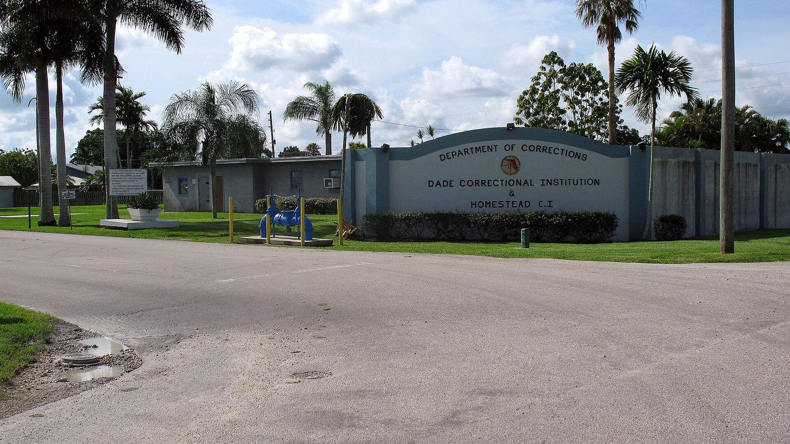

Лусия и женские тюрьмы Флориды
Опубликовано:
Тюрьма штата Леонида вымышленная, конкретный прототип Rockstar не называла. Но женские тюрьмы Флориды реальны, и одна из них была крупнейшей в США.


- По официальному описанию Rockstar, драка за семью привела Лусию в тюрьму штата Леонида, а выйти ей помогла чистая удача.
- Первый трейлер GTA 6 открывается сценой с Лусией в тюрьме.
- Главная женская тюрьма Флориды — Lowell под Окалой, открыта в 1956 году.
- В 2015 году Lowell была крупнейшей женской тюрьмой США — почти 3000 заключённых.
Что в игре
Rockstar описывает Лусию так: отец научил её драться, как только она начала ходить, и с тех пор жизнь бьёт её в ответ. Драка за семью привела её в тюрьму штата Леонида (Leonida Penitentiary), выбраться помогла удача. На официальном кадре Лусия в оранжевой робе и наручниках идёт вместе с другими заключёнными мимо охранника.
Что в реальности
Женщин во Флориде содержат в нескольких учреждениях Департамента исправительных учреждений штата. Главное — Lowell Correctional Institution в округе Мэрион, к северу от Окалы. Она открылась в апреле 1956 года как первая во Флориде тюрьма для женщин. Вместе с корпусом-пристройкой в ней почти 3000 заключённых, и в 2015 году Lowell стала крупнейшей женской тюрьмой США. Здесь же находится женская камера смертников штата.
Ближе к Майами, на юге округа Майами-Дейд во Флорида-Сити, работает женская Homestead Correctional Institution. Она делит въезд с мужской Dade Correctional Institution — на реальном фото общая вывеска двух учреждений.
Lowell не раз попадала в громкие расследования. В 2015 году газета Miami Herald выпустила о ней серию материалов «Beyond Punishment», а в 2020-м Министерство юстиции США по итогам проверки заявило, что заключённые там массово страдали от насилия со стороны персонала. Насколько большой частью сюжета станет тюрьма Леониды, узнаем 19 ноября.
Совпадает и отличается
| Флорида | GTA 6 | |
|---|---|---|
| Женская тюрьма штата | Lowell, Homestead | 🟡 Тюрьма штата Леонида |
| Название | Реальные | 🔵 Leonida Penitentiary |
| Где стоит тюрьма | Окала, Флорида-Сити | Узнаем в игре |
Источники: Rockstar Games (официальное описание Lucia Caminos, трейлер 1); Florida Department of Corrections; Miami Herald — «Beyond Punishment» (2015); U.S. Department of Justice — расследование по Lowell CI (2020).
Реальные фото: Фото: Tami Jo Urban from Detroit, USA, CC BY 2.0 · Wikimedia Commons. Кадры игры: Rockstar Games.
Разборы кадров, слухи и факты за 30 секунд. Подписывайтесь:
YouTubeInstagramTikTok
 vs
vs
 vs
vs
 vs
vs